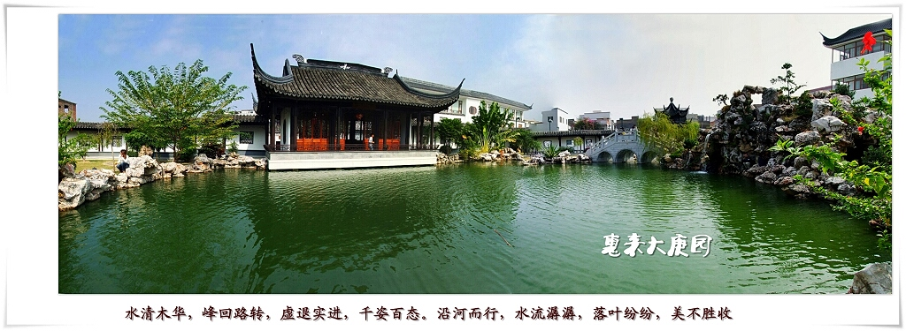
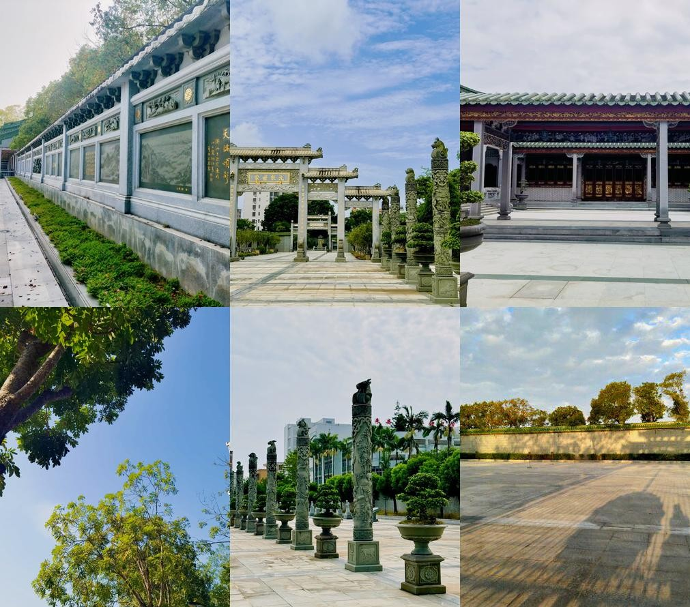
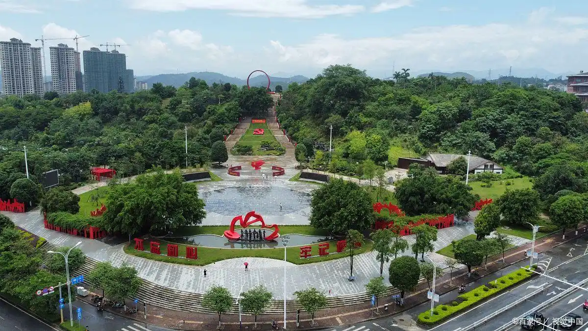

①大庚园
————————————————————————————————————————————————————

介绍
园林以水系为核心景观，通过湖泊、曲桥串联亭榭长廊与自然植被，形成“移步换景”的布局。园内建有传统牌楼、会展室及综合大楼，珍藏启功、关山月等名家书画800余幅，并陈列云南普洱茶文化藏品。正门三层牌楼横额镶嵌欧阳中石题字，建筑风格与周庄牌坊一脉相承。作为揭阳地区重点旅游景点，全年开放时间为8:00-18:00，建议游玩时长为1-2小时，节假日曾实施免费开放政策。周边配套涵盖餐饮美食、住宿酒店、生活服务、运动健身和教育培训等各类设施 。
- 地址:位于广东省惠来县葵潭镇324国道北侧
- 开放时间: 8:00-18:00
- 门票价格: 成人票50元/人,学生票25元/人,儿童票免费
- 推荐指数: ⭐⭐⭐⭐⭐
②世铿院
————————————————————————————————————————————————————

介绍
世铿院是位于揭阳市惠来县葵潭镇玄武社区的的景区，由揭阳市政协名誉主席、香港慈云阁董事局永远主席林世铿先生投资兴建，占地面积100亩。该院设计新颖，结构严谨，布局合理，景点错落有致，是传统建筑艺术与现代文化艺术的结晶，是旅游观光的一大胜地。
世铿院分为前后两部分。前部分以石雕九龙吐珠和八骏马为主要景观。此外，还有280幅大理石碑林环绕四周，上面雕刻着多位名人名家的墨宝。后部分主建筑九院合一，内部装饰华丽，厅堂及四厢刻有诗、词、联、匾额等，东西长廊悬挂着匾额、楹联，屋顶雕塑着具有江南潮汕民居特色的屏景，十八支大理石柱上刻有十二肖像动物。此外，花圃中的花树草木繁茂，世铿先生及其慈母的石雕像背后墙壁上的7幅石雕，记录了林世铿先生的创业历程。
- 地址:位于揭阳市惠来县葵潭镇玄武社区
- 开放时间: 08:00-17:30
- 门票价格: 参考门票 30 元
- 推荐指数: ⭐⭐⭐⭐
③爱心公园
————————————————————————————————————————————————————

介绍
文化体验设施：园内有标志性的爱心大楼，里面设有图书馆、美术馆和圩镇会客室，美术馆展出名家书画作品 。广场上还有翁照垣将军铜像、名贤廊亭、爱心亭和“二十四孝”石雕像，适合带孩子接受文化熏陶 。
运动休闲区域：建有篮球场、羽毛球场、足球场等体育设施，是运动爱好者的好去处 。喜欢安静的可以去亭阁亲水区散步，或者在流水垂钓区钓鱼，全长约 80 米，环境不错 。
自然观光路线：公园依傍狗头山，设有四条登山道，登上山顶可以俯瞰镇区和高铁路风光 。园区相邻陂尾、庵藤两处水库，种植了桂花、木棉、樱花等景观树木，四季有景 。
- 地址:位于揭阳市惠来县葵潭镇长春社区
- 开放时间: 0:00-22:30
- 门票价格: 无需门票免费游玩
- 推荐指数: ⭐⭐⭐⭐⭐⭐